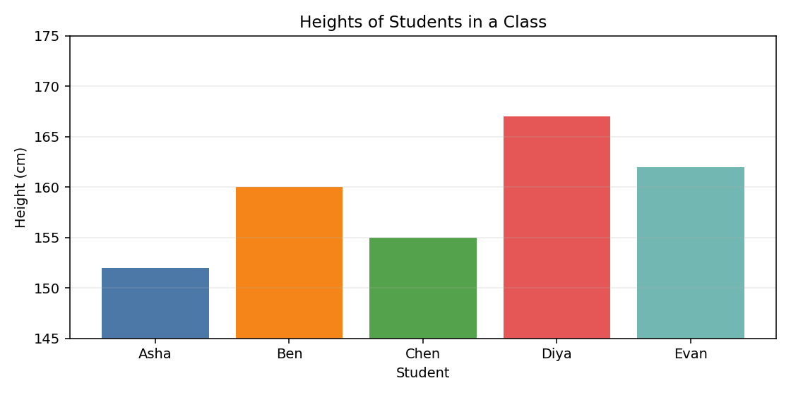
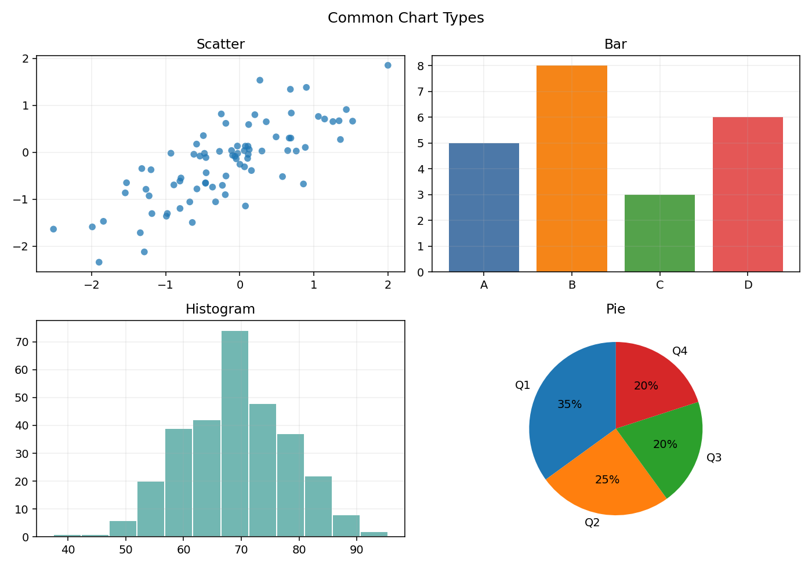
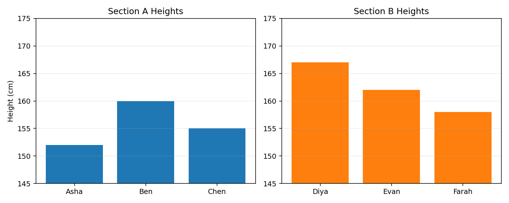

01
Unit 18 · 2 hrs
NumPy Arrays
Numerical Python — foundation of scientific computing
Why NumPy? Python lists are slow for math. NumPy arrays are stored as contiguous memory blocks (C-style), enabling vectorized operations that are 10–100× faster.
Creating Arrays
import numpy as np np.array([1,2,3]) # from list → 1D array np.array([[1,2],[3,4]]) # 2D array (matrix) np.zeros((3,4)) # 3×4 zeros np.ones((2,3)) # 2×3 ones np.arange(0, 10, 2) # [0,2,4,6,8] np.linspace(0, 1, 5) # 5 evenly spaced [0..1] np.eye(3) # 3×3 identity matrix np.random.rand(2,3) # 2×3 random [0,1)
Array Attributes & Indexing
a = np.array([[1,2,3],[4,5,6]]) a.shape # (2, 3) a.ndim # 2 a.dtype # int64 a.size # 6 (total elements) a[0, 1] # 2 (row 0, col 1) a[1, :] # [4,5,6] (all of row 1) a[:, 2] # [3,6] (all of col 2) a[0:2, 1:3] # [[2,3],[5,6]] (submatrix) # Boolean indexing a[a > 3] # [4, 5, 6]
Array Operations
a = np.array([1,2,3]) b = np.array([4,5,6]) a + b # [5, 7, 9] element-wise a * b # [4, 10, 18] element-wise a ** 2 # [1, 4, 9] np.dot(a,b) # 32 (dot product) np.sum(a) # 6 np.mean(a) # 2.0 np.max(a) # 3 a.reshape(3,1) # column vector
02
Unit 19 · 3 hrs
Universal Functions & Broadcasting
Universal Functions (ufuncs)
Ufuncs operate element-wise on arrays. They're implemented in C — much faster than Python loops.
# Math ufuncs np.sqrt([4,9,16]) # [2., 3., 4.] np.exp([1,2]) # [e, e²] np.log([1,10,100]) # natural log np.sin(np.pi/2) # 1.0 np.abs([-1,-2,3]) # [1, 2, 3]
Broadcasting Rules
Broadcasting lets NumPy operate on arrays of different shapes without copying data.
| Rule | Description |
|---|---|
| 1 | If arrays differ in ndim, pad smaller shape with 1s on LEFT |
| 2 | Dimensions of size 1 are stretched to match the other |
| 3 | Sizes must match or be 1 — otherwise ValueError |
a = np.array([[1],[2],[3]]) # shape (3,1) b = np.array([10,20,30]) # shape (3,) a + b # shape (3,3) — broadcasts both # [[11,21,31],[12,22,32],[13,23,33]]
Fancy Indexing
a = np.array([10,20,30,40,50]) a[[0,2,4]] # [10, 30, 50] — index with list a[a > 25] # [30, 40, 50] — boolean mask a[a % 20 == 0] # [20, 40]
03
Unit 20 · 3 hrs
Pandas — Series & DataFrames
Pandas in simple words: Pandas helps you work with table-like data (like Excel sheets) in Python.
If NumPy is for fast numbers, Pandas is for real-world data with row names, column names, missing values, filtering, and summaries.
Series vs DataFrame (for beginners)
| Object | Think of it as | Shape | Example |
|---|---|---|---|
| Series | One labeled column | 1D | Ages of students |
| DataFrame | Full table (many columns) | 2D | Name + Age + Score table |
Memory trick: Series = single lane. DataFrame = full highway with many lanes.
Series
A Series is one column of data with labels (index). You can access values by label or by position.
import pandas as pd # From list (default int index) s = pd.Series([10,20,30]) # From dict (keys become index) s = pd.Series({'a':10, 'b':20}) s['a'] # 10 s.values # numpy array s.index # Index(['a','b'])
DataFrame
A DataFrame is a 2D table made of multiple Series sharing the same row index.
df = pd.DataFrame({ 'Name': ['Alice','Bob','Carol'], 'Age': [25, 30, 22], 'Score':[88, 72, 95] }) df.head(2) # first 2 rows df.shape # (3, 3) df.dtypes # column types df['Age'] # Series (column) df[['Name','Score']] # sub-DataFrame df.iloc[0] # first row by position df.loc[0, 'Name'] # label-based: 'Alice' df[df['Score'] > 80]# filter rows
Key DataFrame Operations
| Operation | Code |
|---|---|
| Describe stats | df.describe() |
| Sort by column | df.sort_values('Age') |
| Group & aggregate | df.groupby('Dept')['Score'].mean() |
| Drop column | df.drop('Age', axis=1) |
| Handle missing | df.fillna(0) / df.dropna() |
| From CSV | pd.read_csv('file.csv') |
| To CSV | df.to_csv('out.csv', index=False) |
iloc vs loc:
iloc = integer position (0-based). loc = label-based (uses index labels). Mixing them up is a common bug.04
Unit 21 · 2 hrs
Matplotlib — Basic Plotting
import matplotlib.pyplot as plt # Simple example: heights of students (bar chart) students = ['Asha', 'Ben', 'Chen', 'Diya', 'Evan'] heights = [152, 160, 155, 167, 162] plt.bar(students, heights) plt.title('Heights of Students in a Class') plt.xlabel('Student') plt.ylabel('Height (cm)') plt.show()

Chart Types
| Chart | Function | Use For |
|---|---|---|
| Line plot | plt.plot(x, y) | Trends over continuous x |
| Scatter plot | plt.scatter(x, y) | Correlation between two vars |
| Bar chart | plt.bar(categories, values) | Comparing discrete categories |
| Histogram | plt.hist(data, bins=10) | Distribution of a variable |
| Pie chart | plt.pie(sizes, labels=labels) | Proportions of a whole |

Subplots
# Compare two class sections side-by-side students_a = ['Asha', 'Ben', 'Chen'] heights_a = [152, 160, 155] students_b = ['Diya', 'Evan', 'Farah'] heights_b = [167, 162, 158] fig, axes = plt.subplots(1, 2, figsize=(10,4)) axes[0].bar(students_a, heights_a); axes[0].set_title('Section A Heights') axes[1].bar(students_b, heights_b); axes[1].set_title('Section B Heights') plt.tight_layout() plt.show()

Always call
plt.show() last (in scripts). In Jupyter: use %matplotlib inline at the top.FC
Quick Review
Flashcards — Module IV
Tap to flip